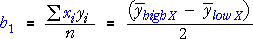
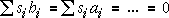

Main effects model and estimates
When the explanatory factors in a 2k factorial experiment are treated as numerical variables, X, Z, W, ... with values ±1, the model with only main effects for the factors and no interaction can be expressed as a regression model,
Because of the factorial design of the experiment, all explanatory variables are uncorrelated (orthogonal), so each 'slope' parameter is estimated as it would be if there were no other explanatory variables. For example, the estimate of the slope parameter for explanatory factor X is:

In a similar way, the 'slope' parameter for each other factor is simply half the difference between the mean response at the high and low levels of the factor.
Sugar reduction study
The data are repeated below.
| Saltiness si |
Acidity ai |
Thickness ti |
Hotness hi |
Sweetness yi |
|---|---|---|---|---|
| +1 +1 +1 +1 +1 +1 +1 +1 -1 -1 -1 -1 -1 -1 -1 -1 |
+1 +1 +1 +1 -1 -1 -1 -1 +1 +1 +1 +1 -1 -1 -1 -1 |
+1 +1 -1 -1 +1 +1 -1 -1 +1 +1 -1 -1 +1 +1 -1 -1 |
+1 -1 +1 -1 +1 -1 +1 -1 +1 -1 +1 -1 +1 -1 +1 -1 |
7.60 7.92 7.72 7.27 8.09 7.87 7.52 6.89 8.02 8.34 8.20 8.21 8.14 7.82 8.04 7.00 |
Note that the coded explanatory factors all have zero mean and are uncorrelated,

The main effects (slope parameters) are estimated from the cross-products of the columns of ±1 and the response.
| Factor | Estimate of main effect |
|---|---|
| Saltiness | -0.181 |
| Acidity | 0.119 |
| Thickness | 0.184 |
| Hotness | 0.126 |
Note that these values for the main effects are half the difference between the mean sweetness at the high and low values of the factors.
The changes to saltiness and thickness have more effect on perceived sweetness than the changes to acidity and hotness.